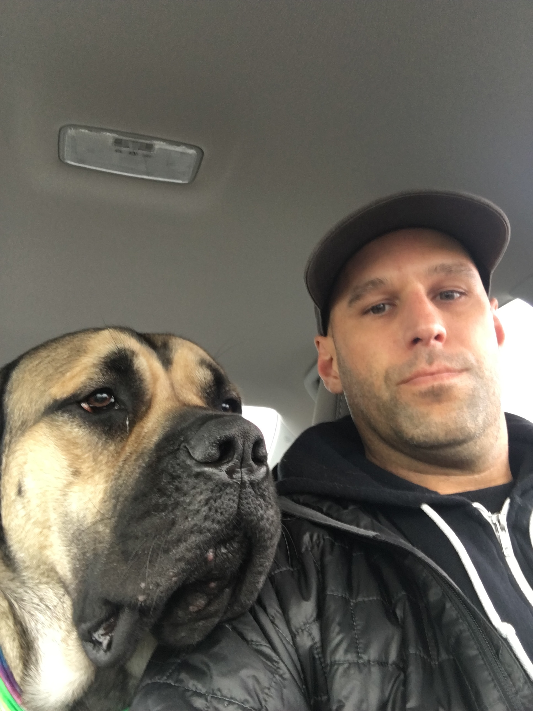

Adventures in Web Development
I grew up with a fascination for how things work, whether it was taking apart old gadgets, exploring new technology, or learning random facts that most people would never need to know. I enjoy spending time outdoors, trying new foods, and convincing myself that I'll eventually organize all the notes I've collected over the years.
One of my goals is to build useful websites and applications that solve real problems while continuing to learn new technologies. I enjoy challenges that require creativity and problem-solving, especially when the solution isn't immediately obvious. In the future, I hope to combine technical skills with a love of learning to create projects that are both practical and enjoyable to use.
